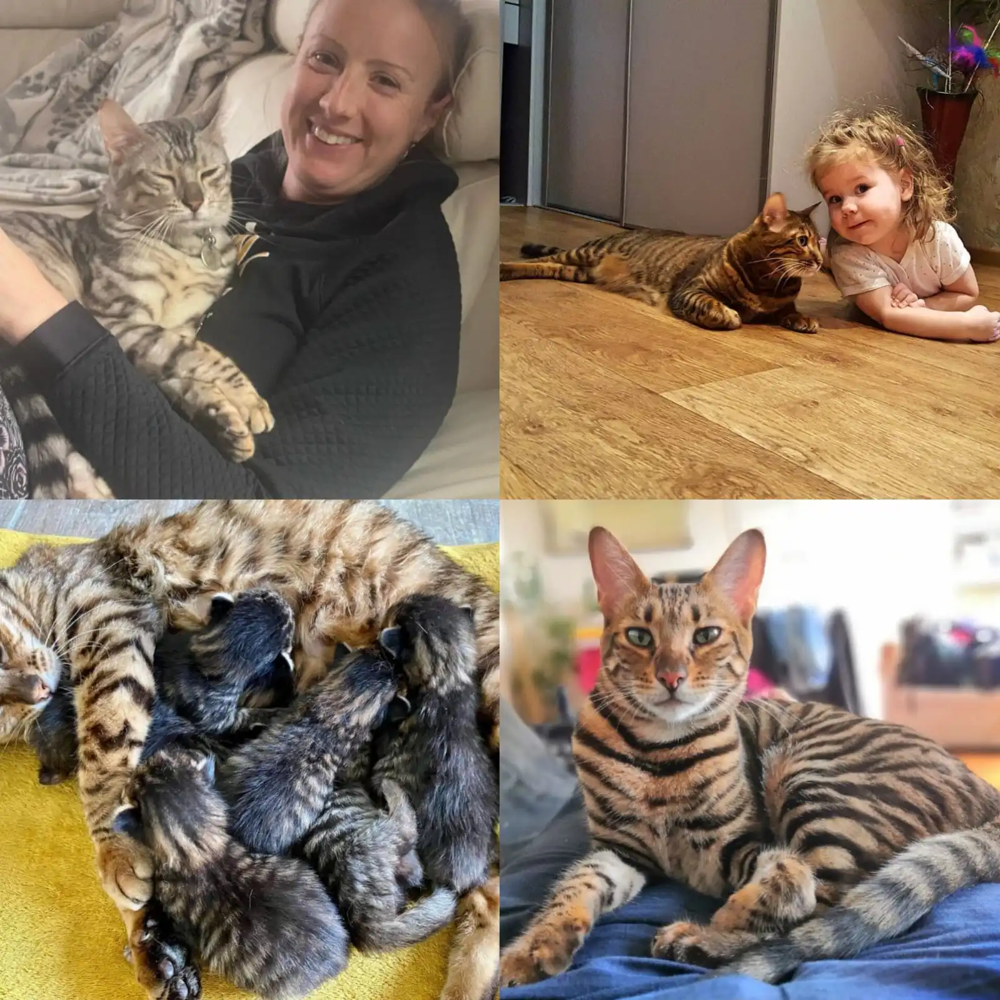
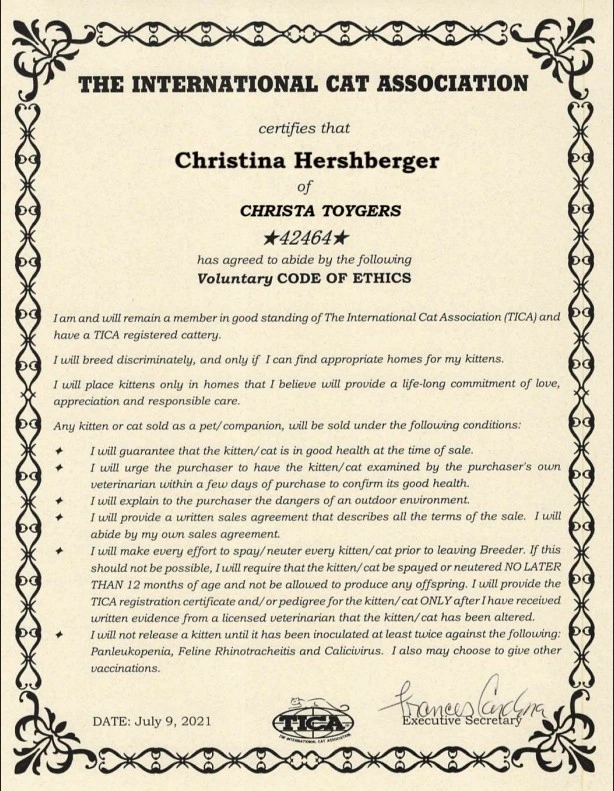
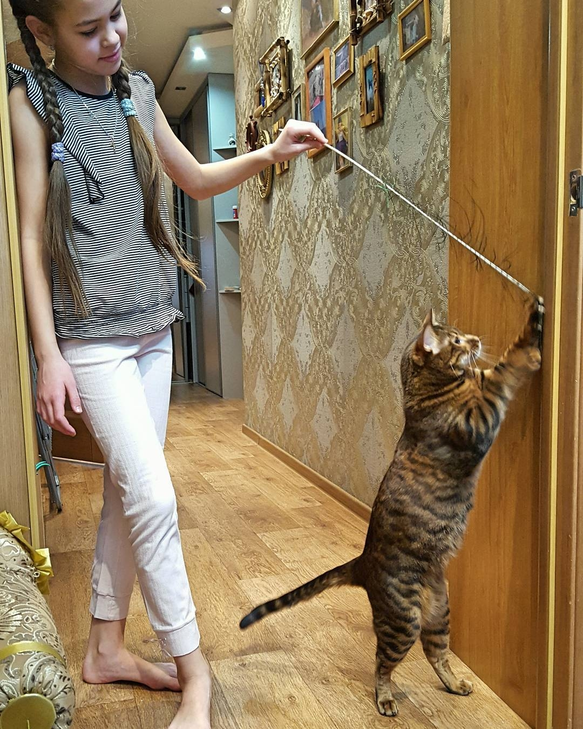
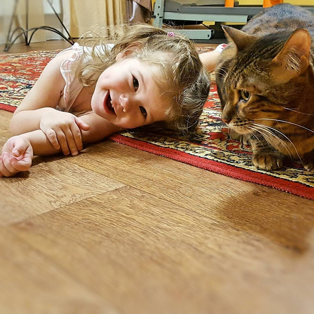
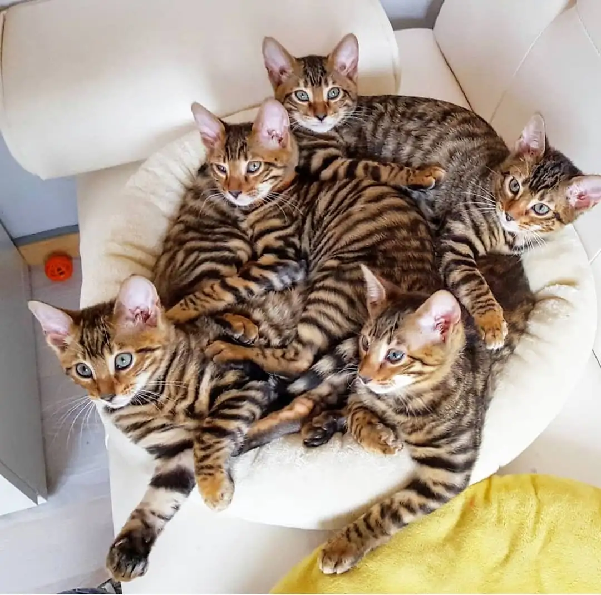

Toyger Kitten For Sale - Toyger Cat For Sale
We are committed to breeding exceptional Toyger cats for sale that exemplify the breed standard while maintaining excellent health and temperament.

Welcome to Christa Toygers, where passion meets expertise in breeding exceptional Toyger cats, my name is Christina Hershberger an animal lover since I was a child. I immediately fell in love with the Toyger Breed, and after learning more about this intelligent companions we dedicated ourselves to developing this remarkable breed that captures the wild beauty of tigers in a domestic environment.
Our breeding program focuses on health, temperament, and the distinctive tiger-like appearance that makes Toygers so special. Each of our cats lives as a beloved family member in our home, ensuring they are well-socialized and affectionate.
Multiple TICA championship titles and breeding excellence awards.
Happy Families
Specialized knowledge in Toyger Breed Standard
Ongoing guidance and assistance for all our kitten adoptions.
With over 8 years of experience in breeding Toygers, we provide the highest standard of care and ethical breeding practices.
Breeding Toygers isn’t just what we do, it’s who we are. Every Toyger kitten that enters our care is the result of years of dedication, knowledge, and an unshakable passion for these remarkable breed.
True excellence in breeding Toyger kittens/cats lies at the crossroads of dedication, knowledge, and an unshakable passion.
Prestige companions, raised under the highest standards of ethics, care, and expertise, reflections of a legacy built on passion.
Hand reared in an environment of quiet luxury, where they receive individualized bonding sessions, premium nutrition, and early enrichment activities that nurture their intelligence and affectionate nature.
Every Toyger entrusted to us is met with a commitment to excellence and a promise that no detail is ever overlooked.
We aren’t just breeders, we are guardians of a rare treasure, a living connection between nature and heart.
We meticulously select each breeding pair based on health, genetic strength, and temperament, ensuring that every Toyger kitten born is healthy.
Every Toyger kitten that grows in our care carries our promise: excellence, compassion, and a life filled with trust and wonder.




We prioritize exceptional breeding standards, our certifications demonstrate our cleanliness and the integrity of our operations.
Our breeding program features internationally recognized champion bloodlines, ensuring exceptional quality in every kitten.
Every kitten comes with a comprehensive health guarantee and has been thoroughly examined by our veterinarian.
Our kittens are raised in a home environment and extensively socialized to ensure well-adjusted, confident companions.
We provide ongoing guidance and support throughout your Toyger's life, ensuring a successful transition to your home.